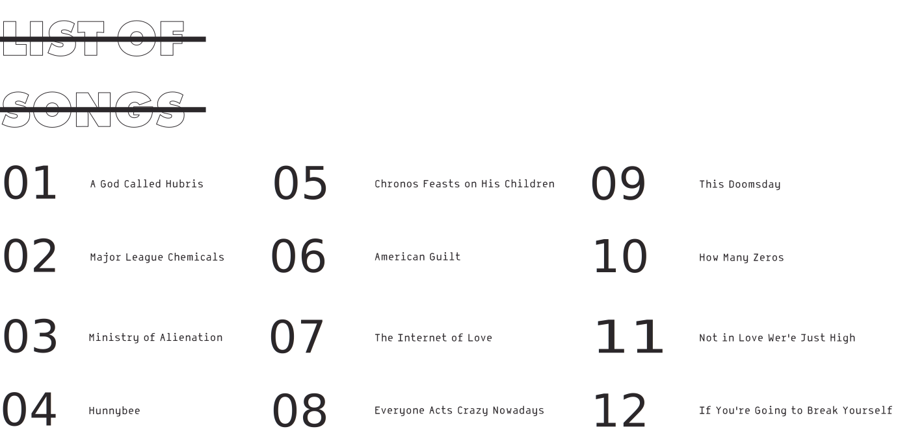
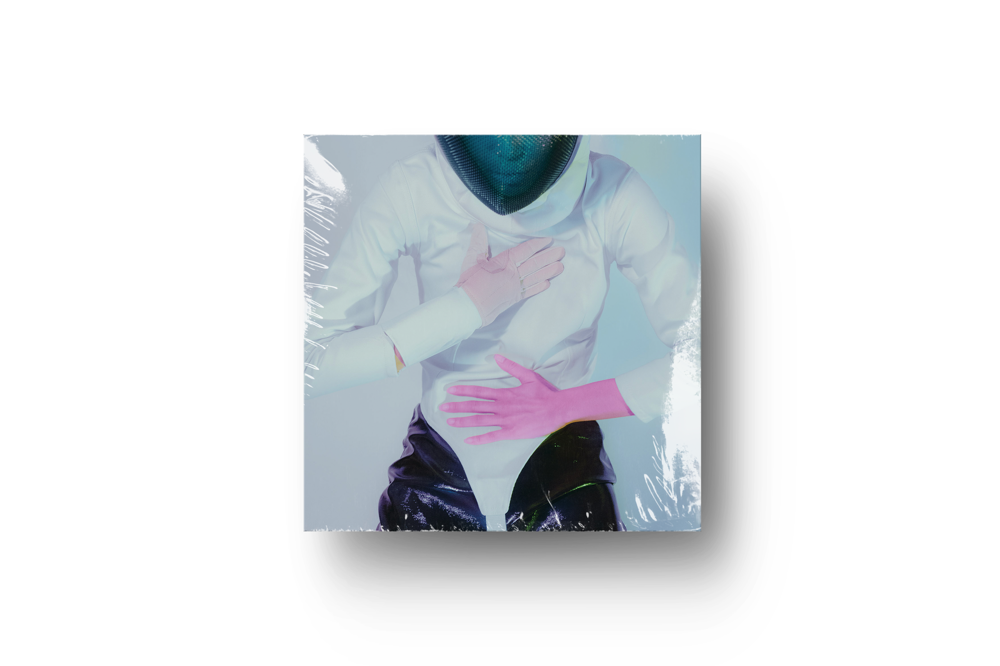

ALBUM 4
SEX&FOOD



Rolling Stone | 24 July 2015

Sex & Food is the fourth studio album by New Zealand band Unknown Mortal Orchestra, released on 6 April 2018 through Jagjaguwar. According to lead singer Ruban Nielson, the album features a more expansive and eclectic sound than previous records, inspired by the international locations where it was recorded, including Mexico City, Seoul, Hanoi and Reykjavík, as well as Nielson's native Auckland and home Portland. The lead single of the album, "American Guilt", was released on 23 January 2018, while the music video premiered on 8 February 2018. "Not In Love We're Just High" was released on 27 February as the second single, and "Everyone Acts Crazy Nowadays" was released on 26 March as the third single.

In a review on Reflektor Magazine the following was said, "The consistent thread through the UMO catalog remains strong; frontman Ruban Nielson spins a soulful vocal over a backdrop of melodically rich music and slick rhythm. This album builds on many of the synthesizers and sampled drum textures introduced on the previous breakout LP Multi-Love in 2015, but offers a different ride. The entire album was covertly previewed in SB-05, the 2017 installment of a Christmas day instrumental/ambient track released digitally for free. Upon first listen, Sex & Food reveals each song in its full form, a pleasant surprise." In July, the BBC Radio & 6Music named Sex & Food one of the best albums released in 2018.
IC-01 Hanoi is the fifth studio album, released on 26 October 2018 through Jagjaguwar. It is the group's second album of 2018 after Sex & Food, The album was recorded entirely in the city of Hanoi and originated from sessions for Sex & Food.
The album has been described as a "sonic distillation of the band's influences in Jazz, Krautrock and the avant garde"